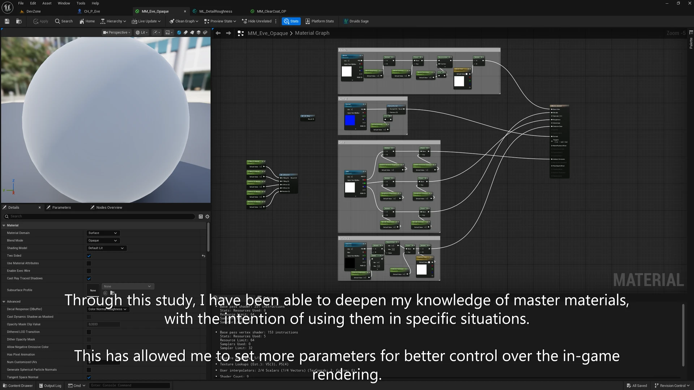
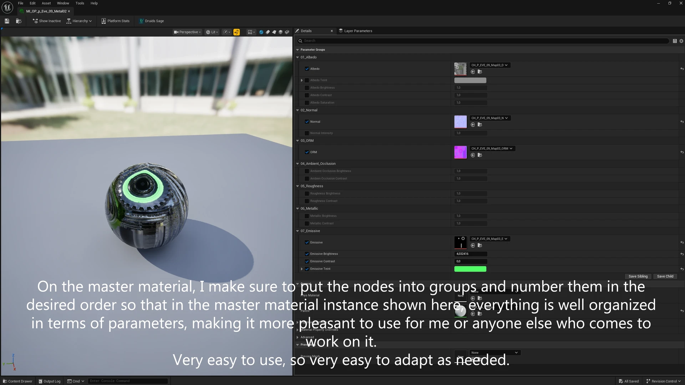
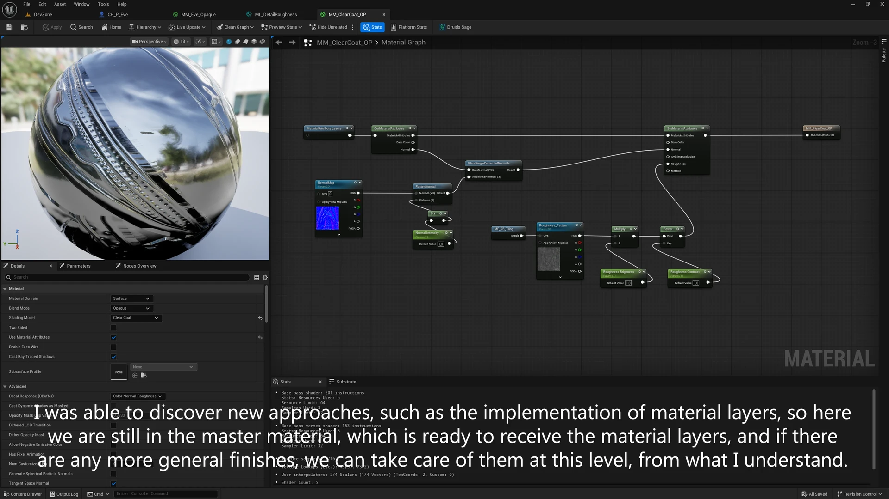
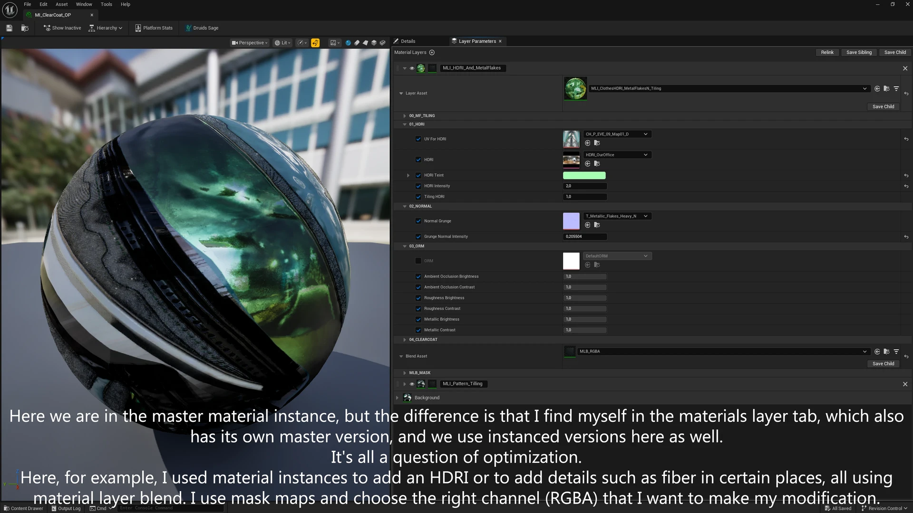
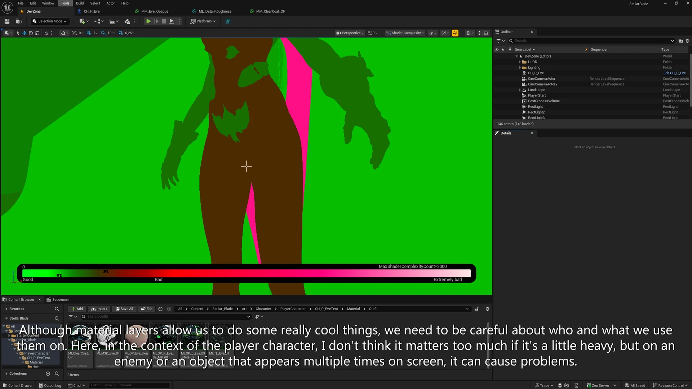
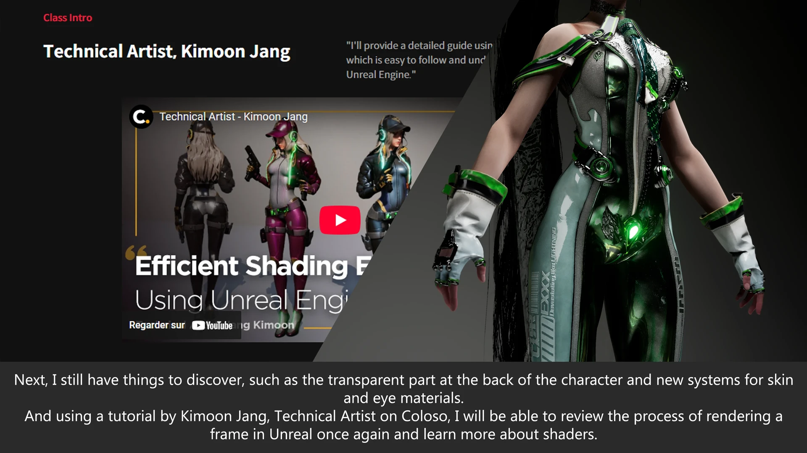
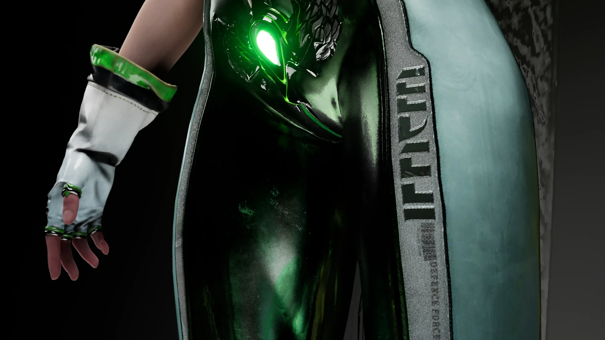

One Master, Many Instances
Through this study I have been able to deepen my knowledge of master materials, with the intention of using them in specific situations. This allowed me to expose more parameters for better control over the in-game rendering.

Instances Built To Be Used
On the master material, I make sure to group the nodes and number them in the desired order, so that in the material instance everything is well organized in terms of parameters. Pleasant to use for me, or for anyone else who comes to work on it. Very easy to use, so very easy to adapt as needed.

Discovering Material Layers
I was able to discover new approaches, such as the implementation of material layers. The master material is ready to receive the layers, and any more general finishes can be handled at this level.

Layers, Blends & Masks
In the instance, the material layers tab has its own master and instanced versions as well: it is all a question of optimization. I used material layer blends to add an HDRI, or details such as fiber in certain places, with mask maps and the right RGBA channel driving each modification.

Power, With Restraint
Material layers allow some really cool things, but we need to be careful about who and what we use them on. On the player character it does not matter too much if it is a little heavy; on an enemy or an object that appears multiple times on screen, it can cause problems.

Still To Discover
I still have things to discover, such as the transparent part at the back of the character, and new systems for skin and eye materials. Using a tutorial by Kimoon Jang, Technical Artist on Coloso, I will review the process of rendering a frame in Unreal once again and learn more about shaders.

Final Render
Eve re-shaded from scratch in Unreal Engine, working from the game's textures with very little public information to lean on.
